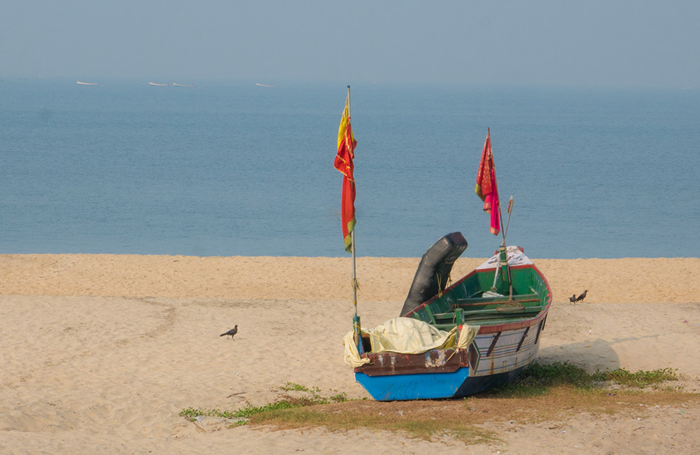

Referred to as the ‘Venice of the East’ by Lord Curzon, Alleppey is known for its backwaters, beaches and canals. But, the city is more than rustic Kerala backwaters and houseboats. The temples and ancient sites are an absolute delight for history buffs and anyone who loves art. If you are longing for a relaxed vacation away from the crowd, amidst nature, get ready to fall in love with Alleppey or Alappuzha.